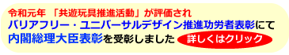
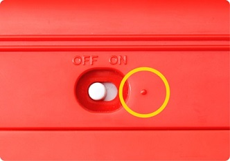
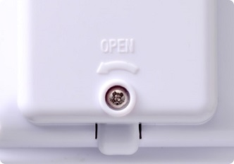
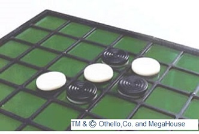
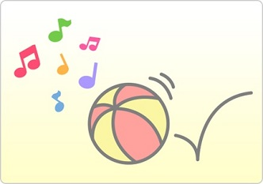
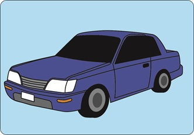

|
 |
|
目の不自由な人たちは、手で触ったり耳で音を聞いたりして、確かめて遊ぶことができます。
そのため、手触りや音等への工夫が「配慮点」になります。
|
【主な配慮点】
●電池を使うおもちゃについて |
・スイッチの「ON」側に「凸表示」がある。 |
|  |
| ・「電池蓋の位置」と「電池蓋の開け方」が手で触って確かめられる。 |
 |
●色の区別が必要なおもちゃについて
・二つ以上のものを識別する必要があるときは、「色の違い」以外に「手触り」「音」などで
識別できる
|

|
●動くおもちゃについて
・おもちゃが手から離れた場所に行っても、音で位置を確認できる。
例：音が鳴るボール
|
|  |
●その他
・実物を模したおもちゃは形や手触りがなるべく実物に近いものである。
例：ミニカー
|

|
| ・遊びの過程と結果を、視覚を使わずに把握できる。 |
・手でおもちゃを触ったときに、意図せず崩れたり、ずれたりしない。(ブロック類など )
・必要に応じて、点字のシール等が用意されている。 |
|
|